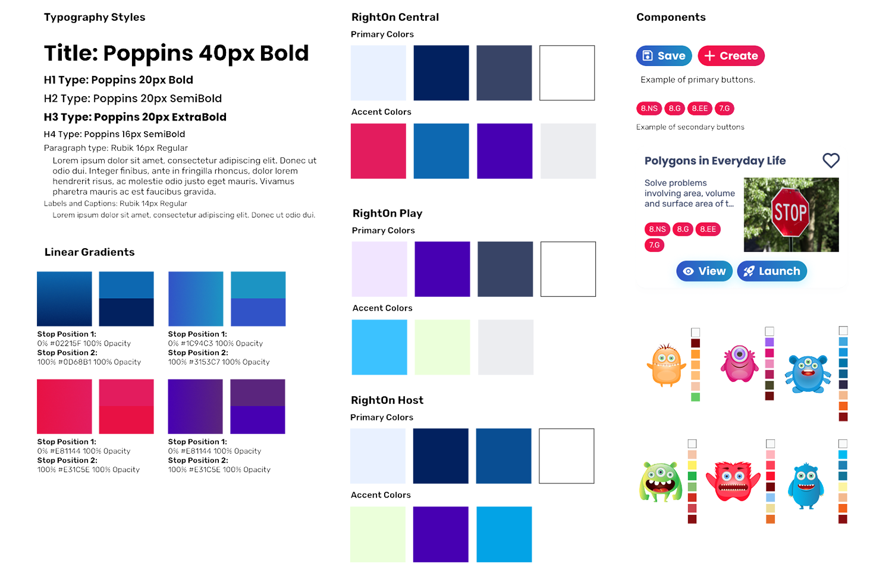
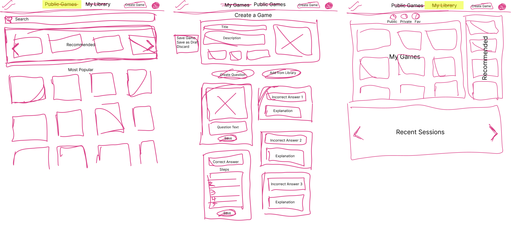
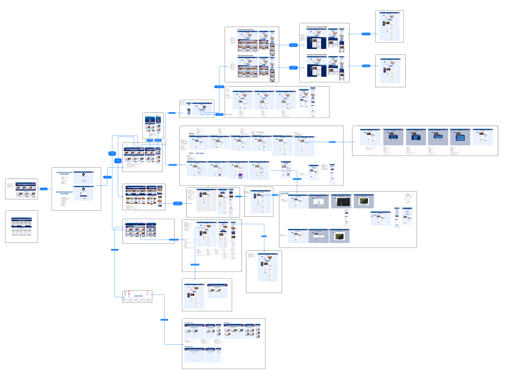
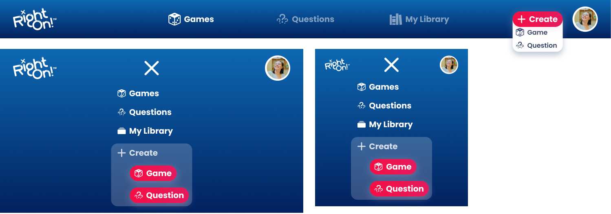
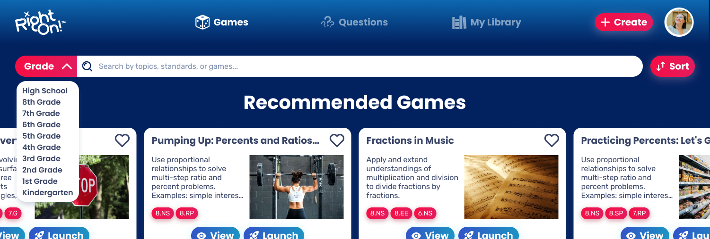
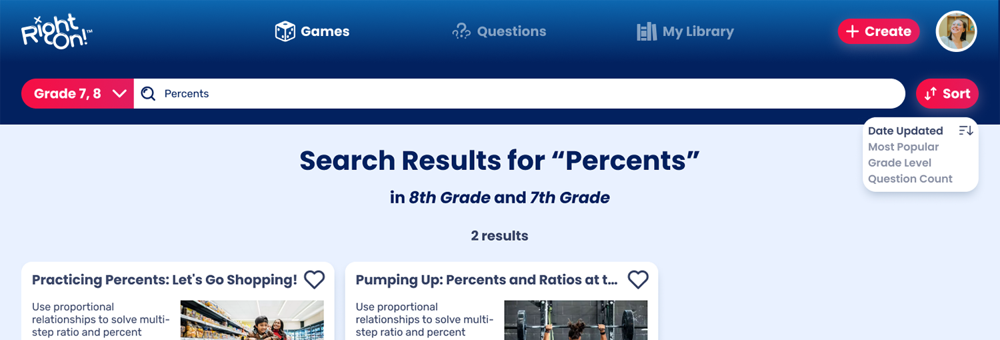

OVERVIEW
RightOn!™ is a web-based platform that engages students in thinking about and learning from mistakes and misconceptions in K-12 math. By shifting focus from quick recall to understanding why wrong answers are wrong, students see errors as learning opportunities, gain confidence in their ability to improve, and develop deeper conceptual understanding of core math concepts.
The RightOn! platform consists of three parts: a learner-facing web app, a database of games and questions, and a teacher facing dashboard.
Over the course of six months from April to September 2024 I completed a Co-Op Experience as a User Experience Designer and Researcher at RightOn! education. Under the direction of CEO Sinclair Wu, Development Head Drew Hart, and Design Head Rod Hinn I spearheaded the comprehensive redesign of RightOn! Central, the teacher facing database of games and questions.
Fellow UX intern Zach Spindel assisted in the development of microinteraction design on this project, and Development Intern Kelly Couvrette assisted in early implementation.
PROBLEM STATEMENT
The RightOn Education platform is still in beta and most design and development efforts have focused on student gameplay (RightOn Play) and the in-game teacher dashboard (RightOn Host). The RightOn Central website, https://central.rightoneducation.com/, in its present state was created to get the platform up and running, rather than focus on user experience or design. In addition to being utilitarian the current designs are not responsive on small screen sizes. With RightOn Play and RightOn Host now sufficently developed and deployed in beta, the next focus was to redesign and restructure RightOn Central for an improved instructor experience choosing and creating games.
Explore Games
View Game
Create Question
USERS & AUDIENCE
The RightOn platform is acquired by teachers and school administrators for use in their classrooms and school districts. RightOn prioritizes educational equity, offering the platform to all users for free, without requiring any software downloads or student logins.
RightOn aims to be optimized for young and new-to-subject teachers to help familiarize them with common core standards and reduce teacher turnover rates in math. Young and new-to subject teachers, while often tech savvy, predominantly come from non-STEM majors and are more likely to need pedagogical support. These teachers are also less traditional in their teaching methods and more open to teaching social-emotional learning (SEL) and self-reflection.
Currently the RightOn Beta is deployed within several schools, after school programs, and summer camps across the Philadelphia area. The current beta focuses on math for students in grades 6-9. Once fully launched the system will cater to K-12 math, HigherEd corequesite math and GED math.
RESEARCH
During my time at RightOn, I had the opportunity to work with our expert advisors to help develop the base of research surrounding the company's core tenants.
POSITIVE CLASSROOM CULTURE OF ERROR
When student make mistakes in math the responses of their teachers and peers impact the development of their attitudes and performance in the subject. A positive error climate correlates with greater motivation, engagement, and performance among students, while a negative error climate can lead to anxiety, avoidance behaviors, and diminished learning outcomes .Offering teachers a channel to offer constructive feedback and encouragement rather than criticism is one way to develop a positive classroom culture of error (Steuer et al., 2013).
SENSE OF BELONGING IN MATH SPACES
Students who perceive a greater sense of belonging to mathematics demonstrate higher levels of motivation, confidence, and persistence compared to students who feel disconnected or alienated from the subject (Barbieri & Miller-Cotto, 2021).
POWER OF LEARNING FROM MISTAKES
Research has found that reflecting on errors is beneficial for students with all levels of knowledge. However, for students with little knowledge of a math topic, studying errors is even more effective than correct worked examples or problem-solving alone (Barbieri & Booth, 2016). A 2014 paper by Adams et al. identified what they defined as the Erroneous Examples Principle:"People learn more deeply when they are asked to critique the incorrect solution procedures of others" (Adams etc al., 2014).
PLAY TESTING
My fellow UX intern, Zach, and I led play-testing sessions with teachers and students in academic settings across the Philadelphia area. These sessions included working with students at Carver Engineering and Science High School, Congreso de Latinos Unidos, and Math Corps Philly Summer Camp. Survey results, group discussions, and observations from these classes aided our team in identifing bugs and potential enhancements for the platform.
COMPETITIVE ANALYSIS
We performed several competitive analyses on other EdTech platforms, with a focus on systems that address misconceptions and incorporate artificial intelligence. Some of these competitors include Gimkit, Eedi, Quizziz, Kyron Learning, and Magic School AI. We used this data to continue to develop the RightOn Competitor & Collaborator Landscape and compare AI and misconception capabilities.
DESIGN PROCESS
STYLE GUIDE
At the beginning of this project the RightOn style guide was outdated, still aligning with a past app design that had been scrapped. In order to begin the comprehensive overhaul of Right On Central we needed to ensure there would be a cohesive brand style across all three platforms in the RightOn system. RightOn Play, the student facing game, was predominantly purple and RightOn Host, the teacher dashboard, was predominantly blue. We decided to incorporate both of these color schemes into RightOn Central as it is the database that bring together Host and Play. All color combinations were tested for compliance with AA and AAA accessibility standards.
RESPONSIVE DESIGN
It is essential that all systems in the RightOn platform are responsive and accessible on all devices to align with the principle of Educational Equity. Not every school, district, or program has access to laptops and technology funding so a mobile-friendly system can support a greater range of classrooms. Design changes on different device sizes must allow all content to remain accessible, allowing seamless performance without a detriment to user experience.

WIREFRAMES
The first design step was to wireframe out preliminary concepts. There was a small base of ideation from a previous UX team member to be used as a starting point. Beginning with digital sketches, then moving to Figma wireframes I developed designs for the current and intended functionality of RightOn Central, incorporating the system's card structure. These wireframes were arranged into a wireflow to visualize possible use cases.
HIGH FIDELITY MOCKUPS
Once our ideas were solidified in wireframes, we began the process of transitioning them into higher-fidelity mockups. These mockups included a wider scope of screens and interactions. These designs were annotated in depth to ensure a clear understanding for future designers and developers on the RightOn team. Specific designs and rationale will be elaborated below in the results section.
DESIGN-DEV HANDOFF
As designs for screens, interactions, and components were completed the UX team periodically met with the Dev team to discuss feasibility, make adjustments, and discuss rationale. These handoff meetings often dove deep into pixel-perfect details, lasting for hours. Some designs, like choosing common core standards or logging in/signing up, needed to be broken out into more complex user flows. These flows were intended to provide more clarity to the dev team in the implementation of processes with many steps.
RESULTS
NAVIGATION
The RightOn Central navigation has six main buttons. On the left, the RightOn logo used to return to Explore Games, in the center the three main explore pages: Explore Games, Explore Questions, and My Library, and finally, on the right Create Game/Question and Profile. An important element in the development of the navigation design was choosing the iconography. These are the most present icons in the system, appearing on every page so they need to be clear and engaging.
Responsive Navigation
SEARCH AND FILTER
The search and filter functionality witin RightOn Central is designed to aid teachers in finding relevant games. There is no search button, results begin lazy loading after a user begins typing. The debounce for this lazy load is 800ms. The search bar parses the title, description, and CCSS fields of all public games in the database. On the left side, users can filter results by grade level. This filter allows multi-select so users can pick a range of applicable grades. On the right side, users can sort results after a search. Only one sort option can be selected at a time. Attempting to select another overrides the prior selection. The default sort on load is date updated, descending (most recent at top). Other sort options are:
- Date Updated: Descending or Ascending
- Most Popular: Descending or Ascending
- Grade Level: Descending or Ascending
- Question Count: Descending or Ascending
Search Bar
 EXPLORE GAMES, EXPLORE QUESTIONS, & MY LIBRARY
Explore Games, Explore Questions, and My Library are the three main tabs across RightOn Central's navigation. If a user is logged in the system will recommend games based on their history, if a user is not logged in they will instead see featured games. All games in Explore Games and Explore Questions are public games created by other members of the platform. Users can access games they have created in My Library. User-owned games are sorted into public, private, and drafts. Users can also find public games they have favorited here.
Explore Games
Explore Questions
My Library
VIEW GAME & VIEW QUESTION
From any of these explore pages, instructors can click into a game or question to see it's details. Viewing a game or question allows you to see the questions, correct answer, incorrect answers, and incorrect answer explanations. This is also where users can launch a game to play with their class.